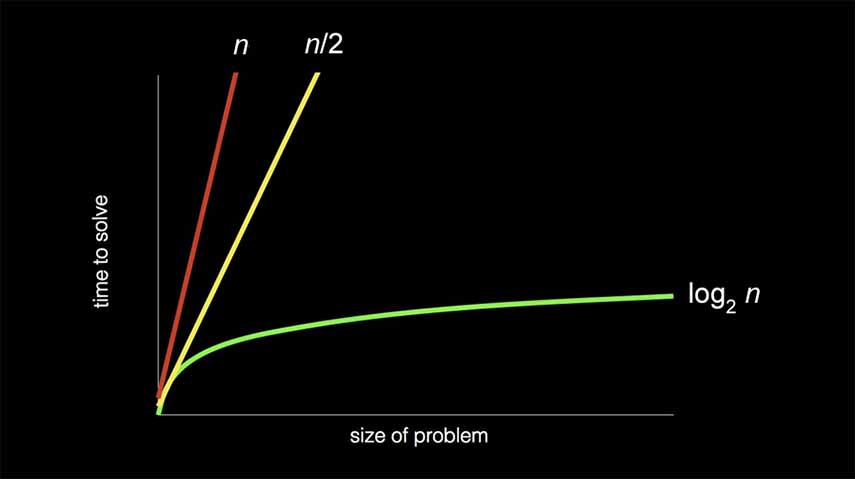

CS50x - Lecture 3 - Algorithms.
search, sort, algorithms, and running time
In the previous lectures we were introduced to the concept of algorithms as step-by-step instructions on how to accomplish something, computer science being the use of algorithms by computers through the use of code. In Lecture 3 we dive a bit deeper into algorithms themselves, specifically search and sorting algorithms, as well as their efficiency.
Linear search
Remember from Lecture 2 how the computer's memory is like a grid of bytes? Well the computer can only look at a certain amount of bytes at a time, it can't look at all the data at once. If we want to get a certain value, we'll need to search for it. In the lecture, we're asked to picture an array like a series of lockers with the doors shut. If we want to find a specific number, let's say 50, we'd need to tell the computer what to do. We can imagine the instructions as pseudocode like this:
For each door from left to right
If 50 is behind door
Return true
Return false
Now we can make it a little more code-like:
for (int i = 0; i < n; i++)
if (doors[i] == 50)
Return true
Return false
This one by one approach is called linear search because you're searching in a straight line. How efficient is it? In the worst possible scenario, you'd have to search every locker once, so n times (n representing the total number of lockers). We would say it has a Big O notation of O(n), or in the order of n. But more on that later.
Binary search
Binary search is another search algorithm, and we used it in Lecture 0 with the example of literally tearing a phonebook in half. Binary search, so named because we split each search into 2 parts, goes something like this:
If no doors left
Return false
If 50 is behind middle door
Return true
Else if 50 < middle door
Search left half of doors
Else if 50 > middle door
Search right half of doors
Let's make our pseudocode slightly more code-like again:
If no doors left
Return false
If 50 is behind doors[middle]
Return true
Else if 50 < doors[middle]
Search doors[0] through doors[middle - 1]
Else if 50 > doors[middle]
Search doors[middle + 1] through doors[n - 1]
Do you see where the binary comes from? Instead of searching one by one, you're searching half of the problem at each step. Of course that won't make too much difference if you're searching through 5 or 6 lockers, but if you're searching through 100, 1,000, 10,000? Rather than search 1,000 individual doors, we'd go from 1,000 > 500 > 250 > 125 > 63 > 32 > 16 > 8 > 4 > 2 > 1, or just 11 steps, much better than 1,000, wouldn't you say? So binary search has a Big O notation of O(log n), or in the order of log n.
Recursion
Recursion, according to the dictionary, is "the repeated application of a recursive procedure or definition" - recursive: "characterized by recurrence or repetition". In computer science, a recursive function is a function that calls it self, it repeats over and over until it encounters a condition that you set it to called the base case. Without a base case, or potentially with an incorrect base case, the computer would be caught in an infinite loop, calling itself infinitely until it runs out of memory to use and crashes.
Binary search, above, is a recursive function, notice the keyword search within the instructions when the instructions themselves are to search. So the base case would be If no doors left end the function by returning false. Then we'd go through each step, when we get to the bottom we start all over again but each time with less doors to search (half each time in this case).
Efficiency and running times
We can see the difference in efficiency and speed between linear search - O(n), and binary search - O(log n) in the following graph:
Rather than be super specific, computer scientists discuss efficiency in terms of the order of running times. If you were to zoom out the above graph to exponential sizes or even infinity, or an indefinite end, you'd see that n and n/2 very quickly become so similar as to be identical. So we just take the greatest factor and throw away the constant terms. A few common algorithm efficiencies are:
- O(n2)
- O(n log n)
- O(n)
- O(log n)
- O(1)
Big O notation (named by German mathematicians Ordnung, which is german for order) considers the "worst" case scenario of an algorithm, or the upper bound of steps, or maybe the maximum number of times the algorithm has to run. Of the orders above, O(n2) is considered the worst running time, O(1) the fastest. Although 1 doesn't necessary mean just one step, it means a constant amount of steps, or the algorithm will take the same amount of steps to run every time.
We also might consider the "best" case, or the least amount of times an algorithm can run, represented by a Greek Omega - Ω. Theoretically when searching you could get lucky and the number you want is behind the first door you search, so both search algorithms are Ω(1). The Greek Theta - Θ - is also used when both the Big O and Omega are the same.
Selection sort
Sorting, as the name implies is arranging the list of values into an order that we want. As you might assume, when an array or list of items is sorted, searching it becomes much easier and faster for the computer. You couldn't use binary search on an unsorted list, because you can't just assume that everything to the left is of lower value, and everything to the right is of higher value. No, in an unsorted list you'd have to check every item individually to find anything you're looking for.
One sorting algorithm is selection sort. Typically, in selection sort you'd find the smallest number and swap it with the first element in the array. The pseudocode would look like:
For i from 0 to n-1
Find smallest number between numbers[i] and numbers[n-1]
Swap smallest number with numbers[i]
To find the running time for this algorithm, you can imagine in the worst possible case, the first line for i from 0 to n-1 is asking the computer to do something n times, then the second line find smallest number between numbers[i] and numbers[n-1] is also asking to do something n times. So the Big O would be n*n or O(n2).
Bubble sort
Bubble sort is another sorting algorithm that works more "locally", repeatedly swapping neighboring elements depending which one is greater than the other. In action, the largest elements "bubble" up to the end of the array. The pseudocode looks like:
Repeat n-1 times
For i from 0 to n-2
If numbers[i] and numbers[i+1] are out of order
Swap them
If no swaps
Quit
Although technically very different sorting algorithms, the efficiency of bubble sort is very similar to selection sort, it also has a Big O of O(n2). Although, bubble sort does include a check and early break if the list is already sorted, so the best case would be Ω(n) because we just need to look through each item once (n times) if they're in order. Whereas selection sort would still need to perform n2 steps in the best possible case, so because both the Big O and Omega are the same, we would say selection sort is Θ(n2).
Merge sort
The last sorting algorithm we saw in the lecture is merge sort, the fastest of the 3 since much like binary search, we use recursion to sort faster. The pseudocode is really short:
If only one number
Quit
Else
Sort left half of number
Sort right half of number
Merge sorted halves
This works by breaking each problem in half until you get to just one number. So in a line of 6341, the left half is 63. The right half is 41. Once again, of the left pair, the left half is 6, the right half is 3. Since we have only one number, let's sort and merge them: 36. Simultaneously of the right pair, the left half is 4, the right half is 1, let's sort and merge: 14. No we have two pairs that are each sorted, 36 | 14. Let's sort and merge them, we'll look at the first value of each half and see which is smaller, place it then place the other value, then do the same for the second value, so on and so forth.
Merge sort thus has an efficiency of O(n log n), where you're performing a log n algorithm n number of times. It also has a best case of Ω(n log n), so we'd say it's Θ(n log n).
A note on searching, speed and efficiency as a whole though: you're always exchanging resources for each other, either memory or time. Merge sort is a much faster algorithm than selection or bubble sort, but it also takes up more space in the computer to store the temporary lists as it's sorting them.